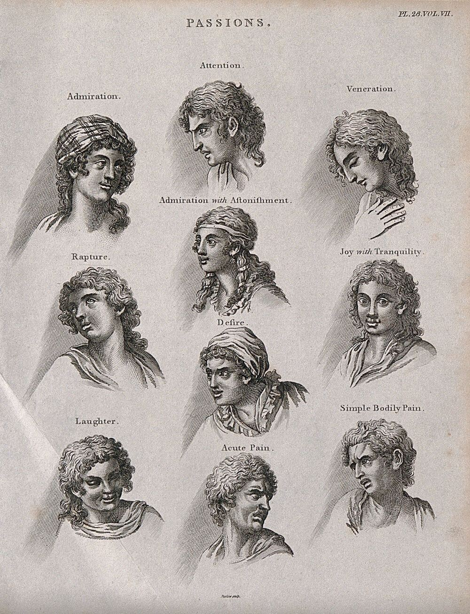
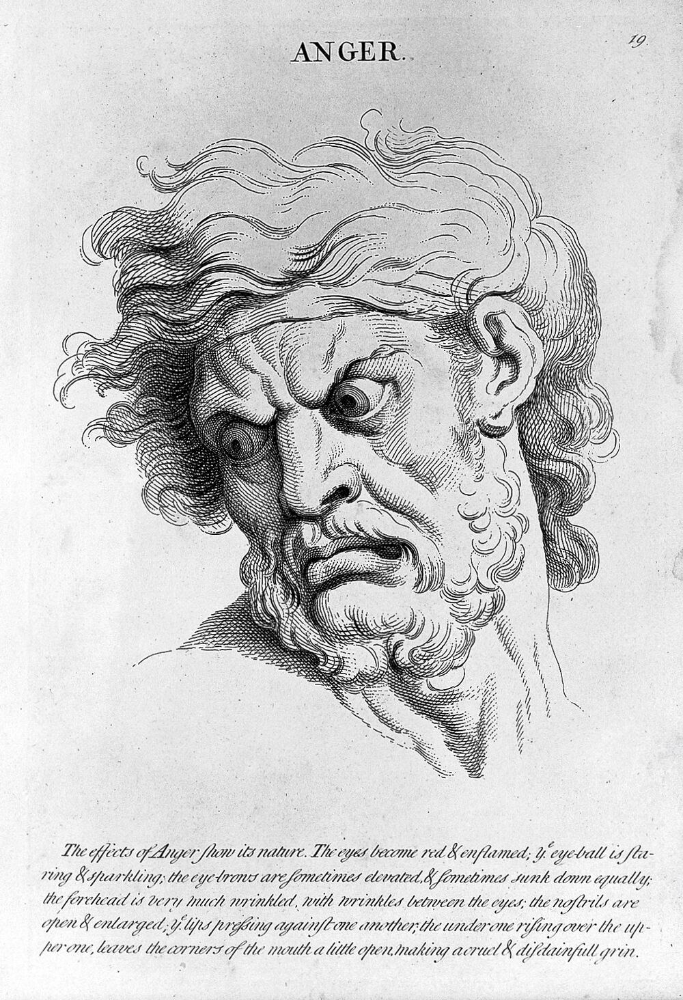
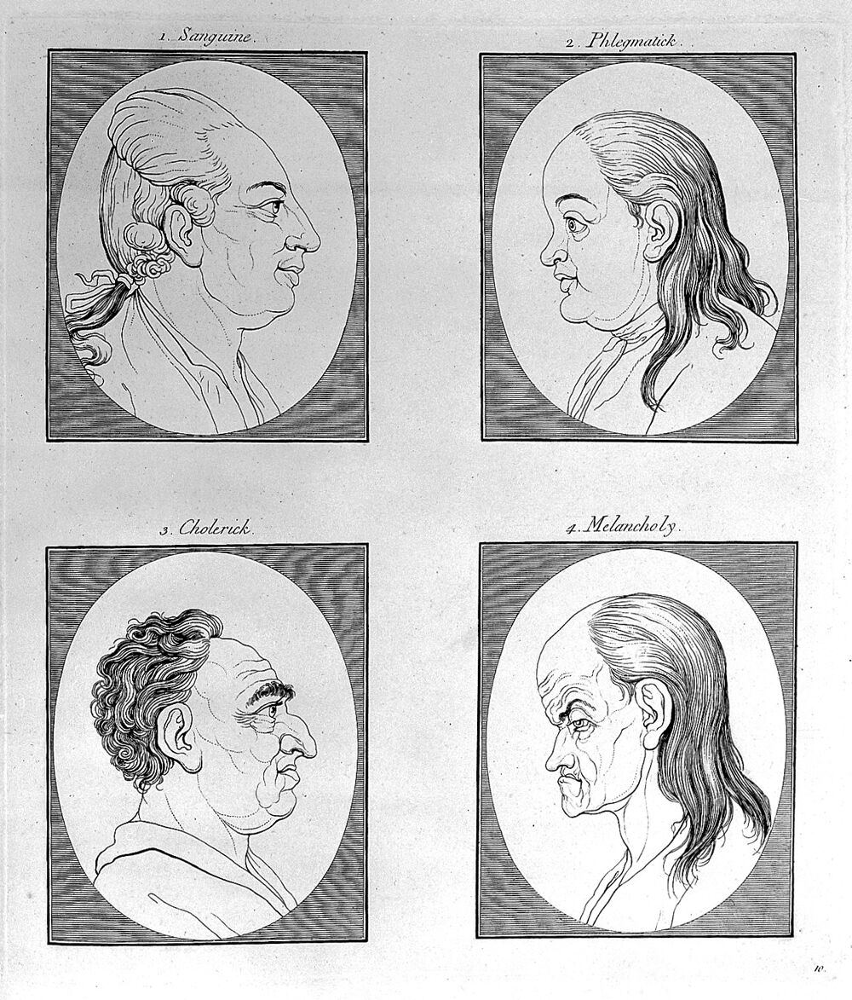
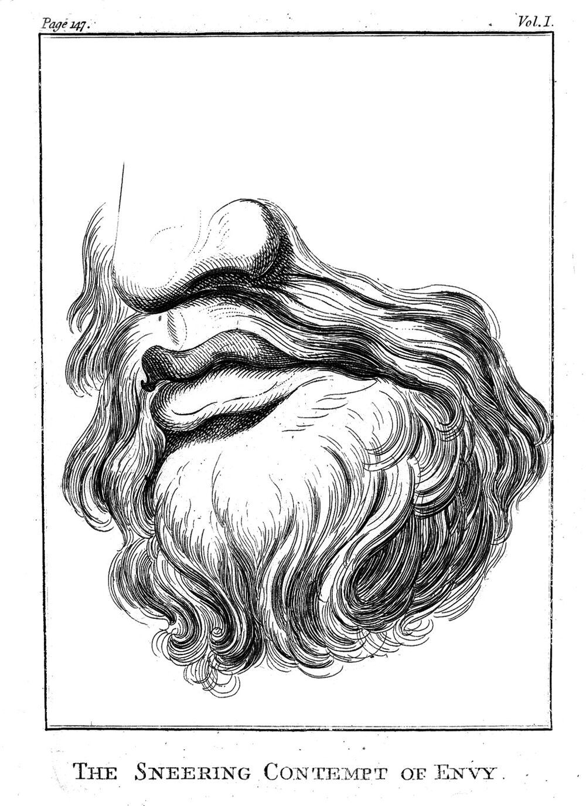
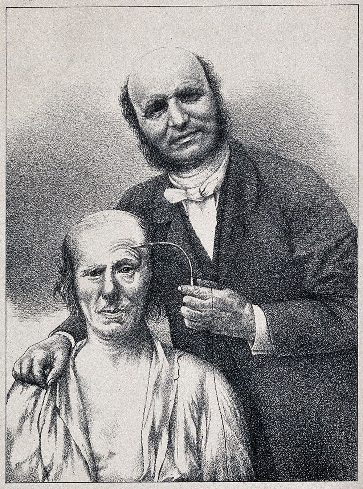
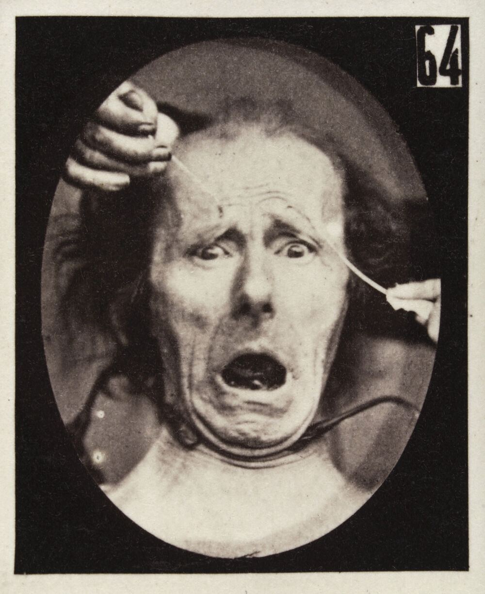
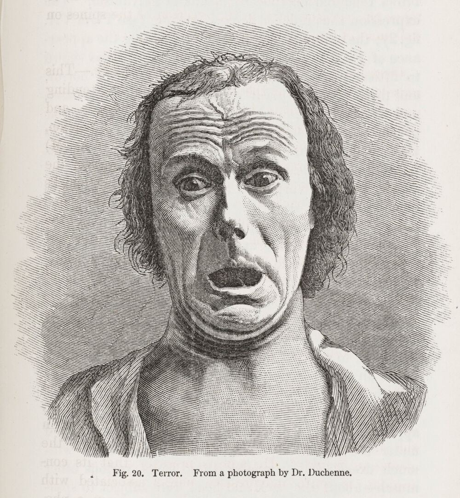
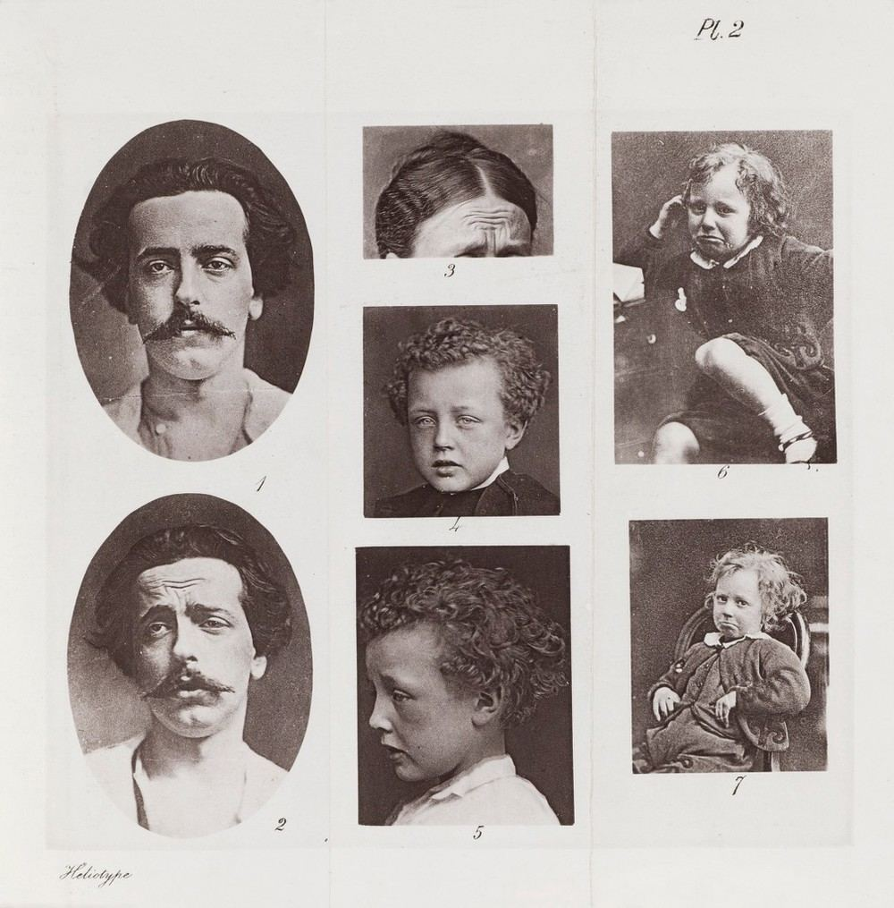
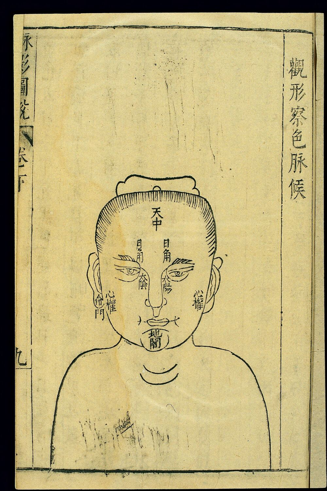

觀相識人自學講義
第四冊 實務應用
職場合夥・感情擇偶・財運健康
本冊原典：《鬼谷子》〈反應〉〈揣篇〉〈摩篇〉／《冰鑑》〈情態〉〈聲音〉〈容貌〉〈氣色〉／《月波洞中記》〈心隱〉等／《人倫大統賦》
目錄
本冊導讀：從「看長相」走到「看行為」
原典精讀：古人自己也說「必先試之」
《鬼谷子·反應》：以靜聽動 《鬼谷子·揣篇》：在情緒高點看真情 《鬼谷子·摩篇》：內符與外應 《冰鑑·情態》：恒態與時態 《冰鑑·聲音》：聞聲知人 《月波洞中記》《人倫大統賦》選讀
科學視角：表情、第一印象與偏誤
從 Le Brun 到 Darwin：表情研究的來歷 Ekman 與微表情：真正的主張與受到的批評 臉部第一印象：快、一致，但不準 月暈效應與確認偏誤：「相很準」的感覺怎麼來的
場景一：職場與合夥（領導格局、誠信、「小人相」）
場景二：感情與擇偶（含「剋夫相」的歧視歷史）
場景三：財運與健康（「漏財相」、氣色與身體警訊）
把它變成方法：決策流程與識人檢核表（可撕下）
案例練習
常見誤解
反思題
一頁總結
延伸閱讀・研究出處・圖片來源
一、本冊導讀：從「看長相」走到「看行為」
前三冊我們讀了五行形相、面相結構與手相結構，知道傳統相書「怎麼看」。這一冊要回答讀者最實際的問題：這些東西能不能用在生活裡？ 例如面試主管、找合夥人、交往對象、判斷一個人可不可信，甚至從臉色看健康。
本冊的答案先說在前面：相書對「人會透過言談、表情、姿態、聲音流露內心」的觀察，有相當的合理成分；但「從五官骨相的靜態長相，推斷一個人的品德、誠信、婚姻與財運」，沒有科學證據支持，而且容易變成偏見。 有趣的是，相書自己也常常這樣提醒──《月波洞中記》說「凡欲相之，必先試之」，引許負的話說「七寸之面，不如一寸之心」。所以本冊的做法是：
先讀古人講「看動態」的段落（《鬼谷子》《冰鑑》等），理解他們真正可取的觀察方法；
再看現代心理學怎麼研究表情、第一印象與偏誤，知道哪些說法有實證、哪些被誇大；
最後在三個生活場景裡，把每一條傳統判斷都拆成三欄 ：相書原說 → 現代可驗證的觀察替代 → 風險提醒。
本冊的三欄判讀法
① 相書原說
古書怎麼寫
標出書名篇名
找不到原典就註明
② 可驗證的替代
行為、言談、紀錄
別人能一起檢查
會隨證據修正
③ 風險提醒
會誤傷誰？
偏見、歧視、延誤就醫
什麼情況不能用
例：「眉毛逆生」
《人倫大統賦》：
「毛直性狠，毛逆禍生。」
→ 主張眉毛生長方向
反映性情與禍福
改看：他生氣時說了什麼、
做了什麼？事後會不會修補？
過去同事怎麼形容他處理
衝突？（可問、可查、可記）
眉形由遺傳、修眉、疤痕
決定，與脾氣無已知關聯。
先入為主會讓你「找到」
符合預期的證據。
圖 4-1 本冊每一條判斷都用這三欄處理。左欄只陳述「相書如此主張」；中欄換成別人也能檢查的行為證據；右欄寫出若照字面使用會誤傷誰。（本講義自繪）
此外，每個判斷都會再標出三層：相書原說 傳統怎麼講；合理成分 其中有道理的部分（多半是「表情、姿態、氣色反映當下的情緒與身體狀態」）；無證據／有風險 沒有研究支持、或會造成偏見與傷害的部分。
識人資訊的可靠度階梯（由下往上越可靠）
① 靜態長相（骨相、五官形狀）
② 第一印象（幾秒鐘的整體感覺）
③ 單次言談與表情（可能只是當天狀態）
④ 多次、多情境的行為觀察（順境與逆境都看過）
⑤ 可查證的紀錄（承諾是否兌現、過往合作者的說法、文件）
⑥ 制度保障（合約、分權、試用期、可退出機制）──不靠「看準」也能保護自己
越可靠
圖 4-2 相書的重心在①②，而本冊鼓勵把重心移到④⑤⑥。①②不是完全沒用──它們可以提醒你「多看一下」，但不能拿來下結論。（本講義自繪）
使用守則（請先讀）
外貌、膚色、身形、疾病、障礙、族群特徵，都不是品德的證據 。本冊引用「小人相」「剋夫相」「漏財相」等說法，是為了理解與檢討，不是背書。
健康相關內容只說「可能值得留意、請看醫生」，不做任何診斷。
《鬼谷子》的觀察術原本是遊說與謀略之術。我們拿來「理解人、避免被騙」，不拿來操控別人。
二、原典精讀：古人自己也說「必先試之」
相書給人的印象是「一眼定終身」。但仔細讀會發現，比較有見識的古代作者都承認：靜態長相不夠，要看人怎麼說話、怎麼反應、在什麼情境下露出什麼。本章精讀六段，順序是先讀不是相書、而是談「察言」的《鬼谷子》，再讀相書中最重視動態的《冰鑑》，最後挑《月波洞中記》《人倫大統賦》裡講「試之」的段落。
說明：《鬼谷子》維基文庫本夾有南朝梁陶弘景注（以〈〉標示），以下引文略去注文、只錄正文，正文用字照錄底本（例如「黙」「歛」「㣲」等異體字不改）。
（一）《鬼谷子·反應》：以靜聽動
人言者，動也；己黙者，靜也。因其言，聽其辭，言有不合者，反而求之，其應必出。言有象，事有比。其有象比，以觀其次。──《鬼谷子·反應第二》（略去陶注）
己黙 自己保持沉默。黙即「默」。
因其言，聽其辭 順著對方的話去聽他的說辭，不急著打斷。
反而求之 反過來追問、換個角度問，讓對方自己補充。
其應必出 對方的回應（真正的想法）一定會出現。
象、比 象：用來比擬事情的形象說法；比：類比、舉例。陶注：「象，謂法象。比，謂比例。」
以觀其次 藉著他的比喻與舉例，看接下來的發展與他思路的順序。
別人說話是「動」，我安靜是「靜」。順著他的話聽他怎麼說；他說得前後不合的地方，我換個方向追問，他真正的回應自然會出來。言語裡有比喻，敘事裡有類比；從他用什麼比喻、舉什麼例子，可以看出他接下來的想法。
解說： 這段是全冊最實用的一句話：少說、多聽、遇到不合處再追問。 它看的不是臉，而是「說法前後是否一致」。現代的結構化面談、記者訪談、甚至調查訪談，核心技巧都很接近：開放式提問、讓對方完整敘述、再針對細節與矛盾追問。研究也指出，比起盯著對方的表情找「說謊破綻」，注意說法的內容與可查證的細節 更有用（見第三章）。
欲聞其聲反默，欲張反歛，欲高反下，欲取反與。──《鬼谷子·反應第二》
反默 想聽對方說話，自己反而要沉默。
欲張反歛 想讓對方打開，自己反而收斂。歛同「斂」。
欲取反與 想得到，先給予。
想聽對方說話，自己就先安靜；想讓對方敞開，自己就先收斂；想讓對方抬高姿態，自己就放低；想得到，先給出。
解說： 這是「讓對方展現自己」的技巧。放在識人上，它提醒我們：你越急著下判斷、越多話，對方越不會露出真實的樣子。 但也要注意倫理：「欲取反與」若用來操弄人，就成了話術。本講義的用法是：自己少說，讓對方有空間把話說完，然後誠實地評估。
故知之始己，自知而後知人也。──《鬼谷子·反應第二》
所以要了解別人，起點在自己；先了解自己，然後才能了解別人。
解說： 這句與後面要講的「確認偏誤」不謀而合：你喜歡誰、怕誰、對哪種長相有成見，都會扭曲你的觀察。識人前先問自己：「我現在對這個人的感覺，是證據，還是我的偏好？」
（二）《鬼谷子·揣篇》：在情緒高點看真情
揣情者，必以其甚喜之時，往而極其欲也，其有欲也，不能隱其情；必以其甚懼之時，往而極其惡也，其有惡也，不能隱其情，情欲必出其變。感動而不知其變者，乃且錯其人，勿與語，而更問所親，知其所安。夫情變於內者，形見於外。故常必以其見者而知其隱者，此所以謂測深探情。──《鬼谷子·揣篇第七》（略去陶注）
揣情 揣度對方的真實心意。
極其欲／極其惡 順著他最想要的（或最怕的）推到極處。
出其變 在變化中流露出來。底本校記：「出」，《道藏》本作「失」。
錯其人 錯，同「措」，擱置。先把這個人放在一邊。
更問所親 改去問他親近的人。
知其所安 了解他真正安於什麼、在意什麼。
形見於外 見，音「現」，顯現在外。
要揣度人的真情，要在他最高興的時候，順著他的慾望去探，人有了慾望就藏不住真情；要在他最害怕的時候，順著他厭惡的事去探，人有了厭惡也藏不住真情，真情慾望一定會在變化中流露出來。如果觸動了他卻看不出變化，就先把他放一邊，不要再跟他談，改去問他親近的人，了解他真正安於什麼。內心起了變化，就會在外面顯現；所以要常從看得見的地方推知看不見的地方，這就叫「測深探情」。
解說： 這段有三個重點值得現代人借用，也有一個要小心的地方。
情緒高點與壓力時刻最有資訊量。 順境時人人客氣，真正的優先順序常在「很想要」或「很害怕」的時候露出來：升遷機會、出錯被追究、利益分配。這正是第五章「看利益衝突時的選擇」的古代版本。看不出來就去問旁人（「更問所親」）。 這就是現代的推薦人查核與背景查核：一個人的長期樣子，認識他多年的人比初次見面的你清楚。「情變於內者，形見於外」有一半是對的。 情緒確實會影響表情、聲音、姿態；但「看得見的外在」能推出多少「看不見的內心」，現代研究的答案是：有限，而且容易誤讀（見第三章）。要小心： 原文是遊說之術，「往而極其欲」帶有刻意刺激對方的意味。我們不必故意設局刺激人，只要在自然發生的壓力情境中留心觀察即可。
（三）《鬼谷子·摩篇》：內符與外應
摩者，揣之術也。內符者，揣之主也。用之有道，其道必隱。──《鬼谷子·摩篇第八》（略去陶注）
摩 切磋、試探、觸動。陶注：「揣知其情，然後以其所欲切摩之，故摩爲揣之術。」
內符 陶注：「謂情欲動於內，而符驗見於外。」內心的動靜在外表上的對應徵驗。
「摩」是揣度人情的方法；內心與外在相應的徵驗，是揣度的主要依據。運用它有門道，而這門道必定是不張揚的。
故物歸類，抱薪趨火，燥者先然；平地注水，濕者先濡。此物類相應於勢，譬猶是也。──《鬼谷子·摩篇第八》
然 同「燃」。 濡 沾濕。
萬物各依其類：抱著柴靠近火，乾的先燒起來；在平地上倒水，濕的地方先被浸透。事物依類相應，就像這樣。
解說： 〈摩篇〉的觀點是：觀察要看「刺激—反應」，而不是看靜止的樣子。 你提到某個話題，對方哪裡先「燒起來」？談到錢、談到功勞、談到前同事，他的反應透露了什麼在乎？這比看他的鼻子高低有用得多。不過「內符」能被讀出多少，古人說得太滿；現代研究提醒，同一個反應可以有很多原因（緊張、疲倦、文化習慣），所以要多次、多情境 才算數。
（四）《冰鑑·情態》：恒態與時態
《冰鑑》七篇（神骨、剛柔、容貌、情態、鬚眉、聲音、氣色）在坊間常被說成曾國藩所作。但維基文庫此本署名「羅祖真人」，書末清代吳榮光的跋也說「余家有冰鑑七篇，不著撰人姓名」。作者歸屬並無定論，本講義只稱《冰鑑》，不歸給特定作者。
容貌者，骨之餘，常佐骨之不足。情態者，神之餘，常佐神之不足。久注觀人精神，乍見觀人情態。──《冰鑑·情態章第四》
骨之餘 骨相的延伸。《冰鑑》以「神」「骨」為根本，容貌與情態是補充。
久注 長時間專注地觀察。 乍見 初次、短暫見面。
容貌是骨相的延伸，常能補骨相之不足；情態是精神的延伸，常能補精神之不足。長時間相處，看一個人的精神；初次見面，看一個人的情態。
前者恒態，亦有時態。方與對談，神忽他往；眾方稱言，此獨冷笑；深險難近，不足與論情。言不必當，極口稱是；未交此人，故意詆毀；卑庸可恥，不足與論事。漫無可否，臨事遲回；不甚關情，亦為墮淚；愚昧之仁，不足與談心。三者不必定人終身。反此以求，可以交天下士。──《冰鑑·情態章第四》
恒態 一貫的態度（前文所說弱態、狂態、疏懶態、周旋態）。
時態 某個時刻、某種情境下的表現。
神忽他往 正在談話，心思卻飄到別處。
極口稱是 不管說得對不對，一律大聲附和。
未交此人，故意詆毀 根本不認識某人，卻刻意說他壞話。
漫無可否，臨事遲回 什麼都說好也說不好，事到臨頭猶豫不決。
不甚關情，亦為墮淚 跟自己不太相干的事也掉淚（情緒廉價）。
不必定人終身 不一定就決定這個人一輩子。
前面講的是一貫的態度，另外還有一時的態度。正和你談話，心思卻跑掉；大家都在稱讚，他獨自冷笑──這種人深沉陰險難以親近，不值得跟他談感情。話不見得對，他卻滿口稱是；還沒跟某人來往，就故意毀謗人家──這種人卑下平庸可恥，不值得跟他談事情。凡事不置可否，臨事猶豫退縮；不怎麼相干的事也跟著流淚──這是糊塗的好心，不值得跟他談心。不過這三種表現不一定能決定一個人的一生。反過來找具備相反特質的人，就可以結交天下的賢士。
解說： 這是整部《冰鑑》中最接近現代「行為觀察」的一段，值得背下來。你會發現它列的全是行為 ，不是長相：
《冰鑑》描述的「時態」 現代可以怎麼觀察 注意 方與對談，神忽他往 對話中是否真的在聽？能否複述你剛說的重點？ 可能只是疲倦、焦慮或注意力不集中的狀況，需多次觀察。 眾方稱言，此獨冷笑 他對別人的成就或好消息怎麼回應？ 也可能是他知道你不知道的內情；問一句「你怎麼看？」 言不必當，極口稱是 他會不會對上級提出不同意見？對你的錯誤會不會提醒？ 某些職場文化壓抑異議，先看環境再看個人。 未交此人，故意詆毀 他怎麼談論不在場的人？是否傳播未經查證的負評？ 這條相當可靠：怎麼說別人，往後就可能怎麼說你。 漫無可否，臨事遲回 需要他表態或決定時，是否總在拖延、推給別人？ 謹慎與推諉不同：看他最後有沒有負責。 不甚關情，亦為墮淚 情緒表達是否與行動一致？哭完有沒有實際幫忙？ 容易感動不是缺點；不要因此評斷他人的情緒。
原文最後一句「三者不必定人終身」非常重要：連作者都承認，一時的表現不能定一個人的終身。這是古書少見的謙虛，也是本冊的基本態度。
（五）《冰鑑·聲音》：聞聲知人
人之聲音，猶天地之氣，輕清上浮，重濁下墜。始於丹田，發於喉，轉於舌，辨於齒，出於唇，實與五音相配。取其自成一家，不必一一合調。聞聲相思，其人斯在，寧必一見決雌雄哉。──《冰鑑·聲音章第六》
聲與音不同。聲主張，尋發處見；音主斂，尋歇處見。辨聲之法，必辨喜怒哀樂。──《冰鑑·聲音章第六》
五音 宮商角徵羽，傳統以五音配五臟、五行。
自成一家 有自己的風格。
寧必一見決雌雄 何必一定要見了面才判定高下。
聲主張，音主斂 「聲」是發出去的部分，在開口處聽；「音」是收住的餘韻，在話尾處聽。
人的聲音就像天地之氣，輕清的上浮，重濁的下沉。聲音從丹田開始，由喉發出，經舌轉動、齒分辨、唇送出，與五音相對應。重要的是有自己的風格，不必每個音都合調。聽到聲音就能想見其人，何必一定要見面才分高下？聲和音不同：聲是向外的，在發聲處觀察；音是收斂的，在停歇處觀察。辨別聲音的方法，一定要分辨喜怒哀樂。
解說： 合理成分 「辨聲必辨喜怒哀樂」是對的：聲音的速度、音高、音量確實會隨情緒改變，人也能從聲音中聽出部分情緒。無證據／有風險 但原文接著把聲音分貴賤（例如「聲雄者，如鐘則貴，如鑼則賤」），把「市井之夫」的說話方式貶為下等。聲音的高低粗細受體型、性別、年齡、方言、聽力、口吃與嗓音疾病影響，拿嗓音判斷貴賤或品格，會直接歧視口音、性別與身心障礙者。 可用的部分是：注意他在不同情境下聲音的變化 （平常與壓力下、對上級與對服務人員），而不是聲音本身的「好壞」。
（六）《月波洞中記》《人倫大統賦》選讀：先試其性行
夫欲相之，必先試之性行，相外乃得其真。欲知其性行者，察之於眼，驗之於口，則可見矣。──《月波洞中記·心隱》
言者，心之聲也。靈氣漏露，發而成響，神靜則辭寡，神躁則辭多，是以既察之於目，又驗之於口。……凡人言語無統緒，好摭人短處，自恃已長處，此人也輕薄無行，眾所共惡，摧挫失志，禍從斯起矣。──《月波洞中記·心隱》
性行 品性與行為。
相外 在看外貌之外（或之後）。
無統緒 沒有條理、東拉西扯。
摭 音「直」，拾取。好摭人短處：喜歡挑別人的毛病。
自恃已長處 仗著自己的長處。底本作「已」，當讀為「己」。
想替人看相，必須先試驗他的品性與行為，在外貌之外才能得到真相。要了解他的品性行為，就看他的眼神、驗證他的言語。言語是心的聲音：精神安靜的人話少，精神浮躁的人話多，所以既要看眼睛，又要驗言語。……說話沒條理、喜歡挑別人毛病、仗著自己長處的人，輕薄而沒有德行，大家都討厭他，一旦受挫就失志，禍患也由此而起。
許負謂七寸之面，不如一寸之心，七寸之面易見，一寸之心難測。積行者難相，損已益人為樂；帶殺人難相，害人安已為樂。──《月波洞中記·卷下·夭折五章》
許負說：七寸大的臉，比不上一寸大的心；臉容易看見，心卻難以測度。積累善行的人難以從相上看出，他們以減損自己、利益別人為樂；帶有殺氣的人也難以看出，他們以傷害別人、安頓自己為樂。
解說： 連相書都承認「最重要的好與壞，從臉上看不出來」。許負是漢代著名相者，此處是《月波洞中記》轉引。我們能看見的，是一個人「以什麼為樂」的行為紀錄 ：他是常常讓別人得利，還是常常讓自己安穩而讓別人吃虧？
貴賤定於骨法，憂喜見於形容。悔吝生於動作之始，成敗在於決斷之中。──《人倫大統賦·卷上》（金·張行簡）
貴賤由骨相決定，憂喜表現在面容上。悔恨與困窘產生於行動的開端，成功或失敗取決於決斷的時刻。
解說： 這四句可以拆成兩半看。「貴賤定於骨法」是典型的宿命式主張，無證據 ；「憂喜見於形容」合理 ，情緒的確會表現在臉上；後兩句「悔吝生於動作之始，成敗在於決斷之中」其實已經跳出相術，講的是行為與決策 ──這正是本冊要你觀察的重點。同一篇賦的結尾也說「若賦性粗惡禍必及，如修德惕厲祿永終」，把命運交回到修德與警惕上。
練習 1：把原典變成觀察問題
把本章讀過的五段原文，各改寫成一個你下週可以實際觀察的問題。例如〈揣篇〉→「這個人在專案出錯、可能被追究時，第一反應是找原因還是找人背鍋？」寫完後檢查：每個問題都不需要看對方的長相就能回答嗎？
三、科學視角：表情、第一印象與偏誤
（一）從 Le Brun 到 Darwin：表情研究的來歷
西方也有自己的「相術」傳統。十七世紀法國宮廷畫家 Charles Le Brun 為畫家整理出各種「激情」（passions）的標準臉孔；十八世紀瑞士牧師 Lavater 的《面相學論文》（Essays on Physiognomy）把面相推到流行高峰，認為臉型、側影能透露品德。十九世紀，法國醫師 Duchenne de Boulogne 用電流刺激臉部肌肉並拍照，Darwin 在《人與動物的情緒表達》（1872）中引用這些照片，開始把表情當作可以科學研究的對象。
這段歷史提醒我們一個重要分界：研究「表情」（臉在動）是有成果的科學；從「長相」（臉的固定形狀）推斷人格，則一再被證明站不住腳。 Lavater 式面相學後來與種族主義的「科學」糾纏在一起，是歷史上的一段教訓。

圖 4-3 Barlow 依 Le Brun 原作刻印的「激情」表情圖：由上而下標有欽佩、注意、崇敬、讚歎與驚訝、狂喜、平靜的喜悅、慾望、大笑、劇痛、單純的身體疼痛等。Le Brun 原是為畫家提供「表情範本」，畫的是臉在動 的樣子，與相書看骨相不同。來源：Wellcome Collection，Public Domain Mark。 
圖 4-4 Le Brun〈憤怒〉（約 1760 年英文版）：眉頭下壓糾結、眼睛圓睜、鼻翼張開、嘴角下拉，底下英文說明這些變化。對照《人倫大統賦》「毛逆禍生」把眉毛形狀當成命運──這裡的眉是暫時被情緒牽動 的眉。來源：Wellcome Collection，Public Domain Mark。

圖 4-5 Lavater《面相學論文》（1789 英譯本）中的「四種氣質」側像：多血質、黏液質、膽汁質、憂鬱質。用固定的側臉輪廓配對性格，和中國相書以五行配臉型的思路很像，也同樣缺乏實證 。來源：Wellcome Collection，Public Domain Mark。 
圖 4-6 Lavater 書中一頁「嫉妒的輕蔑冷笑」（The Sneering Contempt of Envy），只畫鼻、嘴與鬍鬚。注意它畫的其實是一個表情 （嘴角與鼻翼的動作），卻被放進「面相」書裡當作性格標本──表情與長相的混淆，正是誤判的來源。來源：Wellcome Collection，Public Domain Mark。

圖 4-7 Duchenne de Boulogne 手持電極刺激一位老年男子的臉部肌肉（約 1865 年石版畫，據約 1862 年照片）。他證明表情是由特定肌肉組合產生的；後世所稱「杜鄉微笑」（眼周肌肉也參與的真笑）即以他命名。來源：Wellcome Collection，Public Domain Mark。 
圖 4-8 Duchenne《人類面相的機制》圖版 64：兩側電極同時通電，受試者呈現張口、眉頭上揚的「驚恐」樣貌。這張圖說明：同一張臉可以被做出完全不同的表情 ，表情反映的是當下肌肉狀態，不是固定性格。來源：Wellcome Collection，Public Domain Mark。

圖 4-9 Darwin《人與動物的情緒表達》（1872）圖 20「恐懼」，圖下註明據 Duchenne 的照片繪製：額頭橫紋、眼睛睜大、嘴巴張開。Darwin 關心的是表情的演化與普遍性，不是用臉算命。來源：Wellcome Collection，Public Domain Mark。 
圖 4-10 同書圖版 II：一位男子的平常表情（1）與眉頭內側上揚的悲傷表情（2）、悲傷時的額紋（3），以及幾個哭泣、鬧脾氣的孩子。同一個人前後兩張照片判若兩人──若只憑一張照片「看相」，看到的可能只是那一刻的情緒。來源：Wellcome Collection，Public Domain Mark。
（二）Ekman 與微表情：真正的主張與受到的批評
他主張什麼： 美國心理學家 Paul Ekman 從 1960 年代起研究臉部表情。他與 Friesen 在新幾內亞等地的研究（Ekman & Friesen, 1971, Journal of Personality and Social Psychology ）主張，幾種基本情緒（如快樂、悲傷、憤怒、恐懼、厭惡、驚訝）的表情在不同文化中相當程度可以被辨認。他也提出「洩漏」（leakage）的想法：人試圖隱藏情緒時，真實情緒可能以極短暫的「微表情」閃現（Ekman & Friesen, 1969, Psychiatry ）。他們後來發展出「臉部動作編碼系統」（FACS），把表情拆解成一個個肌肉動作單位，這套工具至今仍廣泛用於研究。
受到哪些批評：
人類測謊能力本來就接近碰運氣。 Bond 與 DePaulo（2006, Personality and Social Psychology Review ）整合兩百多份研究，發現人們判斷真話謊話的平均正確率約 54%，只比丟銅板的 50% 稍高；而且有經驗的專業人士並沒有明顯比一般人準。Ekman 與 O'Sullivan（1991, American Psychologist ）的研究中，多數專業團體的表現也接近隨機，只有少數群體較好。說謊沒有「小木偶的鼻子」。 DePaulo 等人（2003, Psychological Bulletin ）整理大量研究後指出，與說謊有關的行為線索大多很微弱、也不穩定。避開眼神、手腳不安這些「常識線索」，跟說謊的關係並不可靠。微表情很少見。 Porter 與 ten Brinke（2008, Psychological Science ）逐格分析受試者真假表情的錄影，發現微表情只出現在約兩成受試者、約 2% 的表情中，而且都只見於上半臉或下半臉，不是完整的全臉表情；說真話時也可能出現。表情不等於情緒。 Barrett 等人（2019, Psychological Science in the Public Interest ）的大型回顧認為，人在某種情緒時臉上未必出現「標準表情」，同一個表情也可能對應不同情緒，且受情境與文化影響很大，因此不能單憑臉部動作可靠地推斷一個人的內心。實務應用受質疑。 美國運輸安全管理局（TSA）曾部分參考這類研究推行機場「行為偵測」計畫（SPOT），美國政府審計署（GAO）2010 年的報告指出該計畫在全面部署前未先驗證其科學基礎；《Nature》也有專文（Weinberger, 2010）檢討其科學根據薄弱。
一句話總結 Ekman
表情研究是真科學，FACS 是好工具；「看微表情就能抓謊」則是被大眾媒體誇大的版本。比較可靠的是：注意說法的內容、前後一致性與可查證的細節，而不是盯著臉找破綻。 這也正是《鬼谷子·反應》「言有不合者，反而求之」的思路。
（三）臉部第一印象：快、一致，但不準
普林斯頓大學的 Alexander Todorov 與同事做了一系列研究，揭示「看臉」這件事在心理上怎麼運作：
非常快。 Willis 與 Todorov（2006, Psychological Science ）讓受試者只看臉 100 毫秒，對「可信度」等特質的判斷，已經和沒有時間限制時的判斷高度相關。換句話說，第一印象幾乎在一眨眼之間就形成了。大家看法很一致。 不同的人看同一張臉，對「可不可信」「能不能幹」的感覺往往相近──這讓人誤以為「既然大家都這麼覺得，一定準」。影響真實決策。 Todorov 等人（2005, Science ）讓受試者只看美國國會選舉候選人的臉判斷「誰比較能幹」，這個判斷在約七成的選區中與實際勝選者一致。Wilson 與 Rule（2015, Psychological Science ）也發現，長相被評為「不可信」的被告，在一級謀殺案中更可能被判死刑而非無期徒刑。臉影響了結果，但這不代表臉反映了真相。 準確度很低。 Rule 等人（2013, Journal of Personality and Social Psychology ）發現，從臉判斷的「可信度」與受試者實際的作弊行為無關，被判刑的企業犯罪者與沒有犯罪紀錄的企業主管在照片上的「可信度」評分也沒有差別。Foo 等人（2022, Personality and Social Psychology Bulletin ）的統合分析則認為，從臉判斷可信度雖有統計上可測得的準確度，但幅度很小（臉部層次的相關約 0.14），作者的結論是這種程度在實務上不太可能有用。忽略臉反而比較好。 Olivola 與 Todorov（2010, Journal of Experimental Social Psychology ）的研究發現，在某些判斷作業中，參考臉部照片的受試者，表現反而比只靠基本統計資料時更差。
Todorov 在 2017 年的著作《Face Value》中的整體結論可以濃縮為：我們無法不從臉形成印象，但我們應該學會不信任這些印象。
「AI 看臉識罪犯」的教訓
2016 年有研究者在網路預印本上宣稱，可以用機器學習從證件照分辨「罪犯」與「非罪犯」（Wu & Zhang, 2016, arXiv）。這引來大量批評：訓練資料中兩組照片的來源、拍攝條件與表情都不同，模型學到的很可能只是「是否在微笑」「照片從哪裡來」之類的差異；而把「長相」與「犯罪」綁在一起，正是舊式面相學與種族偏見的翻版。電腦並不會讓偏見變成科學，只會讓偏見看起來像科學。
（四）月暈效應與確認偏誤：「相很準」的感覺怎麼來的
很多人說：「我看過的相書說的都很準。」為什麼會有這種感覺？心理學有兩個經典概念可以解釋：
月暈效應（halo effect）： Thorndike（1920, Journal of Applied Psychology ）發現，軍官評估士兵時，一項特質評得高，其他不相干的特質也傾向評得高。Dion、Berscheid 與 Walster（1972, Journal of Personality and Social Psychology ）的「美就是好」研究也顯示，外貌較吸引人的人，常被推定為性格較好、生活較成功。一個印象會像月暈一樣擴散到整個人。確認偏誤（confirmation bias）： Nickerson（1998, Review of General Psychology ）的回顧指出，人們傾向尋找、注意、記住支持自己既有想法的資訊，忽略相反的證據。當你相信「三白眼的人不可靠」，你會特別記得那位三白眼又出包的同事，卻忘了其他三白眼的可靠朋友，以及那些眼睛「標準」卻背叛你的人。
「相很準」的錯覺是怎麼形成的
① 看到一張臉
「他眼白好多」
② 瞬間印象＋相書標籤
不到一秒；「三白眼不可信」
③ 月暈效應擴散
連帶覺得他冷漠、有心機
④ 選擇性注意
只看到他出錯的時候
⑤ 選擇性記憶
記住「中」的，忘掉「不中」的
⑥ 信念被「證實」
「相書果然很準」
✂
打斷點 A：把印象寫成「待驗證的假設」
✂
.
.
✂
打斷點 C：寫觀察紀錄，連「不中」也記
打斷點 B：刻意找反例
圖 4-11 偏誤的循環：一個瞬間印象，經過月暈效應、選擇性注意與記憶，最後變成「相書很準」的信念，又回頭影響你看下一張臉。綠色剪刀是三個打斷點：把印象寫成假設、刻意找反例、用紀錄取代記憶。（本講義自繪）
想一想
回想一位你「第一眼就不喜歡」、後來相處卻發現很不錯的人。當初讓你不喜歡的是什麼？後來是什麼改變了你的看法？那個改變你看法的東西，是長相還是行為？
四、場景一：職場與合夥
在職場上，「看錯人」的代價很具體：用錯主管、交錯合夥人、被同事出賣。相書在這方面的說法很多，大致分三類：領導格局（誰能成大事）、誠信（誰可信）、「小人」特徵（誰要提防）。 下面逐一用三欄拆解。
（一）領導格局
凡人言辭審正，聲音安詳，瞻視尊貴，舉止沉隱，折旋俯仰，諸凡安貼，使人見之不覺悚然生敬者，蔡澤雲第一上相之人，有此威儀。──《月波洞中記·河嶽》（底本「雲」當作「云」）
凡是言辭端正、聲音安穩、眼神莊重、舉止沉穩，一舉一動都妥貼得宜，讓人一見就不自覺肅然起敬的人，蔡澤說這是第一等的上相，具有這樣的威儀。
① 相書原說 ② 現代可驗證的觀察替代 ③ 風險提醒 《月波洞中記》：言辭審正、聲音安詳、舉止沉隱、令人生敬者為「上相」。合理成分 沉穩的言行確實讓人安心，也是可以練習的溝通能力。
看他帶過的團隊 ：成員流動率、離職者怎麼評價他；出問題時他扛責還是推責；是否能清楚說明決策理由；是否讓部屬有發言空間。可用結構化面談問具體事件：「說一次你團隊失敗的經驗，你做了什麼？」
風險 「有威儀」容易被誤認為「有能力」。Todorov 的研究顯示，看起來「能幹」的臉會影響選票，但不代表真的能幹。沉穩的表演者與真正的領導者，要靠紀錄區分。《人倫大統賦》：「欲察人倫，先從額相」，額有「伏犀之骨，定作元臣」；《冰鑑·容貌》「五短多貴，兩大不揚」。無證據 骨相決定官位。
領導能力的較佳預測，是過去在類似情境中的實際表現 。人事心理學的大型回顧（Schmidt & Hunter, 1998, Psychological Bulletin ）指出，工作樣本測驗、結構化面談等方法對工作表現的預測力，明顯優於非結構化的印象式面談。
以身高、額頭、骨架選主管，等於系統性排除矮個子、女性與某些族群。這在許多地方可能構成就業歧視。
（二）誠信
① 相書原說 ② 現代可驗證的觀察替代 ③ 風險提醒 《人倫大統賦》：「準頭隆者誠信」；耳「瑩且如輪，主信行之敦篤」。
承諾兌現率 ：他說「明天給你」的東西，有沒有明天給？小承諾準時嗎？做不到時會不會主動提早說？前後一致 ：對不同人講的版本是否一樣？（《鬼谷子》：「言有不合者，反而求之」）錯誤處理 ：犯錯後是承認、修補，還是改口、淡化？無證據 鼻頭、耳朵、眼型與誠信沒有已知關聯；從臉判斷可信度的研究準確度很低（Rule 等, 2013；Foo 等, 2022）。《人倫大統賦》：「端厚寡辭者定免乎辱，誹謗多言者必招其愆」；「大言寡信者略綽」。合理成分 這兩句看的其實是言談行為 ，不是長相。
說大話與做到的比例 ：把他說過的承諾寫下來，三個月後對照。怎麼談論不在場的人 （《冰鑑》「未交此人，故意詆毀」）。背景查核 ：經同意後聯絡推薦人，問具體事件而非籠統評價；查核學經歷、證照、公開的訴訟或商業登記資料。話少不等於可靠，話多也不等於不可靠；內向、口吃、使用第二語言的人可能說話較少或較不流暢。看的是「說與做是否一致」，不是話量。
（三）「小人相」：三白眼、眉逆、鼻勾
坊間最常流傳的「小人相」，大致是：三白眼（黑眼珠偏上或偏下，露出三面眼白）、眉毛逆生或散亂、鷹勾鼻、眼神斜視等。我們先看原典裡實際寫了什麼：
羊眼四白，死于道路，蜂目豬眼，毒而多淫……──《月波洞中記·心隱》
正虎形人不妨下視，斜視，偷視者，多陰賊。……男子眉眼相近，顏色黑者，嫉妒奸猾之人不可與交。──《月波洞中記·卷下·論八限》
毛直性狠，毛逆禍生。……斜盼者人遭其毒，痴視者自剋其形。──《人倫大統賦·卷上》
文人不傷在眼，鷹準動便食人。此賤徵也。──《冰鑑·容貌章第三》
四白 黑眼珠上下左右都露出眼白。坊間常說的「三白眼」（三面露白）本講義所用原典中未見此詞 ，屬於後世流傳說法，未能核對原典。
陰賊 陰險害人。
鷹準 準，鼻子（準頭）。鷹準即鼻樑高而鼻尖下勾的鷹鉤鼻。「動便食人」：一動就要吞噬人。
毛逆 眉毛逆向生長。
① 相書原說 ② 現代可驗證的觀察替代 ③ 風險提醒 三白／四白眼 ：《月波洞中記》「羊眼四白，死于道路」；《人倫大統賦》「四白帶殺」。「三白眼主奸詐」為後世通說，未能核對原典。改看他如何對待沒有利害關係的人 ：餐廳服務生、大樓保全、實習生、外包廠商。對上級和對下屬的態度差距有多大？這是常被引用的經驗法則，雖無嚴謹研究直接證明，但它看的是可觀察的行為，而且能多次驗證。
眼白露出多少取決於眼瞼結構、眼球位置、拍照角度、甲狀腺眼疾、疲倦與年齡。把醫學狀況與五官結構說成「奸相」是對當事人的傷害。 斜視、偷視 ：《月波洞中記》「下視，斜視，偷視者，多陰賊」；《人倫大統賦》「斜盼者人遭其毒」。合理成分 在特定情境下迴避目光可能代表不自在。不看眼睛本身，看情境中的行為 ：談到某件事時是否轉移話題、說法是否前後矛盾、要求看文件時是否推託。
「斜視」可能是眼科疾病（斜視症）；不直視他人在許多文化中是禮貌；自閉症者與社交焦慮者常不習慣眼神接觸。研究也顯示「避開眼神」與說謊的關聯不可靠（DePaulo 等, 2003）。 眉逆、眉散 ：《人倫大統賦》「毛直性狠，毛逆禍生」；《月波洞中記·序》說眉「散逆及斷者麄硬者，為有災無徳」。改看衝突與挫折時的反應 ：被否決提案後如何回應？情緒過後是否修補關係？過去合作者怎麼描述他處理衝突？
眉形是遺傳、修眉、疤痕、毛囊狀況的結果。以眉判斷脾氣，會讓你對「眉形不好看」的人先入為主地敵視。 鷹勾鼻 ：《冰鑑》「鷹準動便食人。此賤徵也」。改看利益衝突時的選擇 ：當他的利益與團隊、客戶利益相衝時，他選哪邊？是否主動揭露利益衝突？是否有過把功勞據為己有的紀錄？
鼻型與族群、遺傳高度相關。歷史上「鷹勾鼻」曾被用來醜化特定族群（例如歐洲反猶宣傳中的刻板形象）。這類說法有明確的歧視風險。 膚色 ：《月波洞中記》「男子眉眼相近，顏色黑者，嫉妒奸猾之人不可與交」。沒有替代觀察可言──膚色不是行為。若要評估「嫉妒」，看他對同事成就的實際反應（《冰鑑》「眾方稱言，此獨冷笑」）。
嚴重風險 把膚色連結到品格，是典型的族群偏見。本講義引用此句，正是為了指出古書中這類說法不可沿用 。
（四）合夥前：把「識人」換成「制度」
就算你觀察得再仔細，也可能看錯。成熟的做法不是追求「看準」，而是設計一個看錯也不會傷太重的結構 。這是相書完全沒有、而現代最有用的一層：
小步試行： 先合作一個小案子，再談大投資。（呼應《月波洞中記》「必先試之」）書面化： 出資比例、分工、決策權、利潤分配、退出機制都寫進合約，必要時請律師、會計師審閱。分權與雙簽： 銀行帳戶、印鑑、重要密碼不集中在一人身上；大額支出需兩人同意。透明帳目： 定期對帳，雙方都能隨時查閱。背景查核： 在對方同意與法律允許下，確認學經歷、過去公司登記與訴訟紀錄、推薦人的具體說法。
行為觀察時間軸：時間越長、情境越多，資訊越可靠
初次見面
第 1 天
小承諾
第 1–4 週
壓力與挫折
第 1–3 個月
利益衝突
遇到才算
長期紀錄
半年以上
・第一印象 ・對服務人員 ・是否在聽
只能當線索
・準時、回訊 ・說到做到 ・做不到時 是否先說
・出錯時的反應 ・被批評時 ・情緒後修補
・功勞怎麼分 ・是否揭露利益 ・有無占小便宜
・多人一致評價 ・可查文件 ・行為是否穩定
可作決策依據
對照古書：《鬼谷子·揣篇》「以其甚喜之時……以其甚懼之時」＝壓力與利益時刻；
「更問所親」＝多人評價；《冰鑑》「久注觀人精神，乍見觀人情態」＝短期與長期要分開看。
圖 4-12 行為觀察時間軸。越往右的資訊越可靠，但也需要時間。重要決策（合夥、結婚、大筆借貸）應盡量等到「利益衝突」與「長期紀錄」階段再定案。（本講義自繪）
五、場景二：感情與擇偶
感情是相術最常被拿來「算」的領域，也是傷害最深的領域。原因很簡單：相書對女性的說法，大量建立在「女人的價值取決於是否旺夫、生子、貞節」的父權框架上。
（一）「剋夫相」：原典怎麼寫，我們該怎麼看
「剋夫」一詞在本講義所用原典中寫作「妨夫」「殺夫」，意思是女性的相貌會導致丈夫遭災或早死。以下是原典中實際的說法：
惟女賦質，與男異禎。和媚有常者貴重，圓凸不秀者賤輕。瞼薄赤而少節，睛瑩澈而多貞。眼下氣青夫必喪，尾後色白男必憎。三角多嗔，為妨夫之霜刃；四白帶殺，作害子之青萍。──《人倫大統賦·卷下》
異禎 禎，吉兆。女子的吉凶徵兆與男子不同。
少節 缺乏貞節。
三角 指三角眼。嗔：易怒。
霜刃、青萍 都指利劍。青萍為古劍名。
女子的稟賦，吉凶徵兆與男子不同。溫和柔媚而有常度的尊貴，圓凸而不秀氣的低賤。眼瞼薄而發紅的少貞節，眼睛清澈的多貞潔。眼下有青氣，丈夫必死；眼尾後方發白，男人必定厭惡她。三角眼易怒，是傷害丈夫的利刃；眼睛四面露白帶殺氣，是傷害子女的寶劍。
婦人有剛骨者，多妨夫及出子于眾父也。──《月波洞中記·卷上·眼限六年》
陽人兩額角有立紋，主殺婦。婦人有者，主殺夫。──《月波洞中記·卷下·論八限》
見男貌似女，女作男形。眼光彩大而雄聲，皮膚粗而行步大，女人之窮相也。──《月波洞中記·人體論》
為什麼說這類說法是歧視
責任錯置： 丈夫生病、事業失敗、早逝，被歸咎於妻子的長相。歷史上，被貼上「剋夫」標籤的女性，在婚姻市場上被排斥，喪夫後也常被夫家指責、苛待。雙重標準： 雖然原文偶有「主殺婦」的對稱說法，但整體而言，女性篇幅集中在貞節、旺夫、生子，男性篇幅集中在功名、財富。女性的價值只被放在「對丈夫有何影響」上。懲罰不符合性別刻板印象的女性： 「雄聲」「行步大」「剛骨」被說成窮相、妨夫，實際上是在規訓女性必須柔順、安靜、小步走路。沒有任何證據： 沒有研究顯示眼型、額紋、骨骼與配偶的健康或壽命有關。
今天若在相親、婚配或家族意見中聽到「剋夫」「旺夫」，可以溫和但清楚地指出：這是歷史上對女性的偏見，不是對一個人的認識。
（二）擇偶的三欄判讀
① 相書原說 ② 現代可驗證的觀察替代 ③ 風險提醒 妨夫、殺夫 ：《人倫大統賦》「三角多嗔，為妨夫之霜刃」；《月波洞中記》「婦人有剛骨者，多妨夫」。對任何性別的伴侶，都改看衝突時怎麼溝通 ：吵架時是就事論事，還是人身攻擊、翻舊帳、冷戰？能否說出「我剛剛說得太過分了」？婚姻研究者 John Gottman 在《Why Marriages Succeed or Fail》（1994）等著作中，特別點出批評人格、輕蔑、防衛、築牆（拒絕溝通）四種互動模式對關係的傷害。
對女性的歷史性歧視；也會讓你對外貌「標準」的對象放下戒心。Gottman 的觀察提供思考框架，但大眾流傳的「能精準預測離婚」等說法有爭議，不宜當成算命。 多嗔 ：三角眼「多嗔」（易怒）。合理成分 易怒確實是值得關心的特質──但要看行為，不是看眼型。看情緒調節 ：遇到塞車、等餐、計畫被打亂時怎麼反應？生氣時會不會摔東西、飆車、威脅？情緒過後能否自己平復、道歉？是否把錯都推給別人？
安全提醒 若對方有控制你的行蹤、切斷你與親友聯繫、威脅或動手等行為，這是警訊，不是「個性」。可向當地家暴或婦女保護專線求助。貞節與淫相 ：《月波洞中記》「眼偷視、斜視、下視、看人不休者，及言語多笑而媚者，主娼妓之材也」。看對承諾與界線的態度 ：是否尊重你的界線與「不」？對前任的描述是否公允？有沒有隱瞞重要的事（婚姻狀態、債務、子女）？
「愛笑」「眼神多」被貶為淫相，是對女性的道德汙名，且與忠誠沒有關係。 旺夫、宜家 ：相書常稱某些相貌「旺夫」「為正妻」。看價值觀與生活方式是否相容 ：金錢觀、要不要孩子、家務分工、與原生家庭的距離、宗教與政治、職涯規劃。這些需要直接談，不能從臉看。
「旺夫」把女性當成丈夫事業的工具；男性也同樣不該被「看相」決定是否「靠得住」。 兒女、六親 ：《人倫大統賦》「四白帶殺，作害子之青萍」；《月波洞中記》「左有旋紋者，妨父。右有旋紋者，妨母」。看對家人與前任的態度 ：怎麼談論父母、手足、前任？能否承認自己在過去關係中的責任？對待長輩、小孩、寵物是否有耐心？
家人生病或過世被歸咎於某人的眉毛、眼睛，對當事人是沉重的心理傷害，尤其是孩子。
（三）價值觀對話：可以一起聊的題目
與其看相，不如花幾次約會好好聊。以下題目沒有標準答案，重點是對方怎麼回答、能不能聽你的不同意見 ：
主題 可以問的問題 金錢 你從小家裡怎麼談錢？你會怎麼分配薪水？借錢給朋友或家人，你的底線是什麼？婚後帳戶要分開還是合併？ 衝突 你上一次跟人吵架是為了什麼？後來怎麼收場？你希望伴侶在你生氣時怎麼做？ 家庭 你希望跟原生家庭保持多近的距離？逢年過節怎麼安排？父母意見和伴侶意見衝突時怎麼辦？ 孩子 想不想要孩子？如果想，誰來主要照顧？如果無法生育呢？ 家務與工作 家務怎麼分？如果其中一人要換工作、搬家、進修，怎麼決定？ 過去 你從上一段關係學到什麼？（注意：是「學到什麼」，不是「對方有多糟」。） 未來 五年後你希望過什麼樣的生活？什麼事情對你來說是不能退讓的？
練習 2：寫下你的「不可退讓清單」
在認識新對象之前，先寫下三到五條你在關係中不可退讓的事（例如「不能有肢體暴力」「金錢要透明」）。每一條都要是可以觀察到的行為 ，不是外貌條件。寫完後檢查：如果清單上出現「長相」，試著把它改成背後真正在意的行為。
六、場景三：財運與健康
（一）「漏財相」
坊間所說「漏財相」，最常見的是「鼻孔外露（朝天鼻）漏財」「眉尾散聚不了財」「牙縫大漏財」「手指縫大漏財」等。原典中可以核對到的是：
竅小慳劣，頭低孤獨。……蘭廷明兮庭旅實，井灶露兮廚無粟。──《人倫大統賦·卷下》
尾散者資財難聚，頭交者身命早傾。──《人倫大統賦·卷上》（論眉）
眉過眼者，豐富。眉不覆眼者，乏財。──《月波洞中記·相眉》
竅 鼻孔。竅小慳劣：鼻孔小的人吝嗇。
蘭廷 蘭臺、廷尉，相書稱左右鼻翼。
井灶 指鼻孔。井灶露：鼻孔外露。廚無粟：廚房沒有糧食，比喻貧窮。
頭交 兩眉頭相連。
「牙縫漏財」「指縫漏財」在本講義所用原典中未見，屬後世流傳說法，未能核對原典 。
① 相書原說 ② 現代可驗證的觀察替代 ③ 風險提醒 鼻孔外露漏財 ：《人倫大統賦》「井灶露兮廚無粟」；「竅小慳劣」。看實際的財務行為 ：有沒有預算與記帳習慣？有沒有緊急預備金？卡債與分期是否失控？是否容易被「穩賺不賠」的投資話術說動？
鼻型是遺傳與族群特徵。照這套說法，鼻孔大也不行（漏財）、小也不行（吝嗇），可以說任何長相都能被解釋 ──這正是無法被驗證的典型。 眉尾散、眉短乏財 ：《人倫大統賦》「尾散者資財難聚」；《月波洞中記》「眉不覆眼者，乏財」。看對金錢的價值觀 ：消費是否與收入相稱？借錢後是否如期還？面對財務壞消息時是正視還是逃避？（可配合第五章「金錢」對話題）
對自己：別因「漏財相」而焦慮或花錢「改運」（如付費改眉、買開運物）。對他人：別因此拒絕僱用或往來。 合夥看財運 ：相書常有「某相主破財、主大破」之說。合夥前看財務透明度 ：是否願意公開帳目？是否有過欠款、跳票、訴訟？是否願意簽書面協議？
有人以「你有漏財相，要找我合夥才補得起來」作為詐騙話術。聽到用面相評論你的財運並同時推銷服務、投資或商品時，要特別警覺。
（二）氣色與身體警訊：相書說什麼，醫學怎麼說

圖 4-13 明末刻本的面部望診圖，右欄題「觀形察色脈候」，臉上標出天中、日角、月角、太陰、太陽、命門、地閣等部位。據 Wellcome 館藏說明，這類圖是醫家用來依部位顏色推斷臟腑病變的。它顯示面部部位圖在中國同時屬於相術與醫學兩個傳統；今天我們可以把「留意臉色變化」的觀念保留下來，但判斷病因要交給醫師與檢查。來源：Wellcome Collection，CC BY 4.0。 「氣色」是相術中與現代最接近的部分，因為臉色、眼白、嘴唇、指甲的變化，有時 確實與身體狀況有關。中醫望診也從這裡發展。但相書往往把氣色連到「得財」「喪夫」「四十日身亡」等預言，這部分沒有根據，而且可能讓人害怕或延誤就醫。
色忌白、忌青。青常見於眼底，白常發於眉端。然亦有不同。心事憂勞，青如凝墨；禍生不測，青如浮煙；酒色憊倦，白如臥羊；災晦催人，白如傅粉。──《冰鑑·氣色章第七》
氣色忌白、忌青。青色常見於眼下，白色常出現在眉端。但情況各有不同：心事憂慮勞累，青色像凝固的墨；災禍突然來臨，青色像浮動的煙；縱酒好色而疲倦，白色像臥著的羊；災難晦氣逼近，白色像搽了粉。
解說： 合理成分 「心事憂勞」「酒色憊倦」與臉色有關，這有生活常識基礎：睡眠不足、壓力、飲酒過量，常讓人眼下發青、臉色蒼白黯淡。無證據 「禍生不測」「災晦催人」則是從氣色預言外在災禍，沒有根據。
黃點滿天倉，乾焦色不揚。也應脾有疾，積久見身亡。──《月波洞中記·疾病五章》
這類從某個部位的顏色推斷「某臟有病、多久身亡」的說法，在相書中很多（例如「有黑色起於兩頰者，四十日身亡」）。我們不把它們當作健康判斷 ，但可以借用它們背後的態度：身體出現持續的變化時，值得留意。
你注意到的持續變化 相書可能的說法 建議 臉色或皮膚持續蠟黃、眼白發黃 多以黃色為吉（《冰鑑》「黃色為主，此正色也」）或主脾病 值得盡快就醫 。眼白發黃可能與肝膽等問題有關，需由醫師檢查判斷，不要以「氣色好」自我安慰。臉色持續蒼白、容易疲倦、頭暈 「白如傅粉」主災晦 可能值得檢查，例如請醫師評估是否貧血等。不要自行補藥。 嘴唇或指甲持續發紫、發青 「青黑禍發」（《人倫大統賦》論唇） 若伴隨呼吸困難、胸悶，應立即就醫 ；平時持續出現也應看醫師。 指甲形狀或顏色改變（如變形、凹陷、出現深色縱線、指尖變粗圓） 手相書常以指甲論福壽 值得請醫師或皮膚科檢查。指甲深色縱線若新出現或變寬，尤其應就醫確認。 眼下長期發黑、臉色黯淡 「心事憂勞，青如凝墨」 先檢視睡眠、壓力、飲酒；若調整作息後仍持續，或伴隨其他症狀，請就醫。 臉上新長出、快速變大或顏色不均的痣或斑 相書以痣論吉凶 請皮膚科檢查。不要因為「這是好痣／壞痣」而決定點掉或保留。 體重短期內不明原因明顯變化、臉型改變 「肥人」「瘦人」各有吉凶說法 請醫師評估。
健康提醒
本表只是提醒「哪些變化可能值得留意」，不是診斷工具 。任何身體症狀請以醫師的診察與檢查為準。也請不要對別人的臉色指指點點：「你臉色好差，是不是要出事」這類話對病人與身心障礙者是傷害。若真心關心，可以說：「最近好像比較累，需要幫忙嗎？」
七、把它變成方法：決策流程與識人檢核表
前面三個場景的共同結論可以濃縮成一個流程：面相或第一印象只是「引起注意的線索」，把它轉成一個待驗證的問題，再用行為與紀錄回答。 決策風險越高，越需要制度保障。
識人決策流程
注意到一個線索（長相、印象、傳聞）
這是「事實」 還是「感覺」？
感覺（含面相）： 只記為「待驗證假設」
蒐集行為證據（三來源）
親自觀察多次 ・ 第三方說法 ・ 文件紀錄
這個決定 風險高嗎？
低風險（一般社交、小合作）
小步試行，保持開放
讓對方有機會推翻你的第一印象
高風險（合夥、借貸、婚姻、聘任）
背景查核＋書面合約＋分權
設計「看錯也能退出」的機制
定期回顧：新證據出現就修正判斷
感覺
事實
低
高
圖 4-14 識人決策流程。面相與第一印象只能進入右上角的「待驗證假設」，不能直接通往結論。虛線表示：回顧時有新證據，就回到蒐集證據的步驟。（本講義自繪）
下一頁怎麼用
下一頁是可以單獨列印、剪下的識人檢核表。建議用法：(1) 每位重要對象用一張；(2) 每次有具體事件就在對應項目寫日期與一句事實描述（不寫形容詞）；(3) 至少累積三個月、兩種以上情境再做結論；(4) 「長相／第一印象」欄只能寫在最上面的「線索」格，而且必須轉成一個問題。
✂ ─ ─ ─ ─ 沿虛線剪下 ─ ─ ─ ─ 觀相識人自學講義（四）識人檢核表 ─ ─ ─ ─ ✂
識人檢核表
對象：＿＿＿＿＿＿ 關係：□同事 □主管 □合夥 □交往 □其他＿＿＿ 開始日期：＿＿＿＿
0 線索區（長相、第一印象、傳聞）──只能寫在這裡，不能當結論
我注意到：＿＿＿＿＿＿＿＿＿＿＿＿＿＿＿＿＿＿＿＿＿＿＿＿＿＿＿＿＿＿＿＿＿＿
轉成要驗證的問題：＿＿＿＿＿＿＿＿＿＿＿＿＿＿＿＿＿＿＿＿＿＿＿＿＿＿＿＿＿
觀察項目
日期與事實（不寫形容詞）
＋ － ?
A 說到做到
1. 小承諾（準時、回覆、交件）是否兌現
2. 做不到時，是否提前告知並提出替代
3. 對不同人說的版本是否一致
B 對待沒有利害關係的人
4. 對服務人員、保全、外送員的態度
5. 對上級與對下屬的態度差距
6. 談論不在場的人時，是否公允
C 壓力與衝突
7. 出錯時：承認修補，或推責掩蓋
8. 被批評、被拒絕時的反應
9. 情緒過後是否主動修補關係
D 利益衝突
10. 功勞與責任怎麼分
11. 是否主動揭露利益衝突
12. 金錢往來是否清楚、準時
E 言談（《鬼谷子》《冰鑑》的提醒）
13. 前後說法有無矛盾，追問時如何回應
14. 是否真的在聽（能否複述你的重點）
15. 是否尊重不同意見與你的「不」
F 紀錄與第三方
16. 過去合作者／推薦人的具體說法
17. 可查證的資料（學經歷、登記、文件）
結論前自我檢查
□ 已觀察至少三個月、兩種以上情境（順境＋壓力） □ 有至少一個第三方或文件來源
□ 我刻意找過反例 □ 結論中沒有任何一條依據是長相、膚色、口音、性別或身體特徵
□ 高風險決定已有制度保障（合約、分權、試行、退出機制）
目前判斷：＿＿＿＿＿＿＿＿＿＿＿＿＿＿＿＿ 下次回顧日期：＿＿＿＿＿＿
＋ 符合期待 － 有疑慮 ? 資訊不足（「資訊不足」很正常，比亂下結論好）
圖 4-15 識人檢核表（本講義自繪，可自由影印使用）
八、案例練習
以下情境皆為虛構。請先自己寫下判斷，再看參考思路。
案例 A：招募新主管
小芸的公司要聘一位業務主管，兩位候選人進入最後一輪。甲先生高大、聲音洪亮、談吐自信，面試官的長輩看了說「這是官相，額頭飽滿、鼻樑挺，有領導格局」；乙女士說話較慢、會停下來想，眼睛略呈「三白」，長輩說「這種眼睛有心機」。
問題： (1) 長輩的判斷屬於圖 4-2 的哪一層？(2) 請設計三個能區分兩人實際能力的方法。(3) 這個情境中可能有哪些偏誤在運作？
參考思路： (1) 屬於「靜態長相」與「第一印象」層，只能當線索。(2) 結構化面談：同樣的問題問兩人，請各自說一次帶團隊度過業績下滑的具體經過；請兩人做一個工作樣本（例如分析一份真實的業績報表並提出計畫）；經同意後聯絡前部屬與前主管，問具體事件。(3) 月暈效應（高大、聲音洪亮 → 推定能幹）；性別刻板印象（自信的男性被看成領導者，審慎的女性被看成有心機）；確認偏誤（之後只注意符合「官相」與「心機」的事）。
案例 B：朋友找你合夥開店
阿哲認識老林半年，老林「面相很正」、為人豪爽、常請客。老林邀阿哲各出一半資金開咖啡店，說「我們兄弟不用簽什麼約，簽了反而傷感情」。阿哲注意到：老林兩次約好的看店時間都遲到一小時以上，沒有事先通知；談到上一次創業失敗，他說「都是合夥人害的」。
問題： (1) 從檢核表來看，哪些項目已有資訊？是「＋」還是「－」？(2) 阿哲應該怎麼做？
參考思路： (1) A1、A2 出現「－」（遲到且未告知）；F16 有疑慮（把過去失敗全推給別人，對照《冰鑑》「未交此人，故意詆毀」的精神，以及《月波洞中記》「好摭人短處」）；「常請客」是社交表現，不等於財務可靠。「面相很正」只能放在線索區。(2) 先不急著出資；坦白提出書面合約、分權雙簽、帳目透明的要求，看老林的反應（拒絕簽約本身就是重要資訊）；可先合作一個小型市集攤位測試。這不是「看穿他是壞人」，而是在資訊不足時保護雙方。
案例 C：「她有剋夫相」
小婷和交往三年的男友準備結婚。男友母親請人看相後說小婷「顴骨高、眼角上揚，是剋夫相」，要求兩人分手或「化解」。男友很為難。
問題： (1) 如果你是小婷的朋友，你會怎麼幫她整理這件事？(2) 如果你是男友，怎麼跟母親溝通比較好？
參考思路： (1) 先確認：這是對長相的評論，與小婷的為人無關；「顴高剋夫」這一具體說法在本講義所用原典中未能核對，而原典中的「妨夫」說法（《人倫大統賦》「三角多嗔，為妨夫之霜刃」等）本身就是對女性的歷史偏見。真正值得兩人討論的是：男友在原生家庭與伴侶意見衝突時會怎麼做 ──這是第五章「家庭」題目的真實考驗。(2) 先理解母親的擔心（多半是對兒子未來的焦慮），再表達立場：「我理解你擔心我，但我看的是她這三年怎麼對我、對家人。」避免讓小婷獨自面對長輩，也避免付錢「化解」而默認了這種說法。
案例 D：同事的臉色
阿明發現同事阿芳最近幾週臉色明顯發黃，眼白也有點黃，人看起來很累。另一位同事說「黃色是好氣色，她要升官了」。
問題： 阿明可以怎麼做？不該做什麼？
參考思路： 持續的皮膚、眼白發黃屬於「值得就醫」的變化。阿明可以私下、溫和地表達關心：「最近好像比較累，有空要不要去給醫生看看？」不要在眾人面前評論她的臉色，也不要自行猜測病名或推薦偏方。「黃色主吉」是相書說法（《冰鑑》「科名中人，以黃色為主」），不應拿來取代就醫。
案例 E：自己就是「被看相」的人
小凱天生眉毛稀疏、眉尾散開，從小被親戚說「眉尾散，存不了錢」。他現在每次花錢都很焦慮，甚至考慮去做「改運」紋眉。
問題： 你會給小凱什麼建議？
參考思路： 「尾散者資財難聚」（《人倫大統賦》）沒有證據支持。小凱的焦慮是真實的，可以把注意力轉到可控的財務行為：記帳、設定預算、建立緊急預備金、學習辨識投資詐騙。若他基於審美想修眉、紋眉，是個人選擇；但若是為了「改運」而花大錢，就是被相術說法牽著走。
九、常見誤解
誤解 1：「相書流傳上千年，一定有道理。」
流傳久代表它滿足了人們「想快速判斷別人」的需求，不代表它準確。相書裡有合理的觀察（例如情緒會表現在臉上），也有大量無法驗證、甚至自相矛盾的說法（鼻孔大漏財、鼻孔小吝嗇）。要分開看。
誤解 2：「學了微表情，就能看穿謊言。」
研究顯示人類整體的測謊正確率只比碰運氣稍高（Bond & DePaulo, 2006），微表情很少出現，也不專屬於說謊（Porter & ten Brinke, 2008）。比較有用的是注意說法內容、前後一致與可查證的細節。
誤解 3：「大家第一眼都覺得他不可信，那就八九不離十。」
第一印象的「一致性」很高，「準確度」卻很低（Rule 等, 2013；Foo 等, 2022）。大家一致，可能只是大家共享同一種刻板印象。
誤解 4：「我只是參考，不會因為長相歧視人。」
月暈效應與確認偏誤多半在不知不覺中發生。「只是參考」的印象，往往會影響你接下來注意什麼、記住什麼。最好的做法是把印象明確寫成「待驗證的問題」，並設定期限去驗證。
誤解 5：「《冰鑑》是曾國藩寫的，曾國藩用它識人，所以有效。」
作者歸屬並無定論（維基文庫本署名「羅祖真人」，清吳榮光跋稱「不著撰人姓名」）。即使是名人推崇的方法，也要看證據。而且《冰鑑》最有價值的〈情態〉篇，講的正是行為觀察，連作者都說「三者不必定人終身」。
誤解 6：「看相看到身體警訊，也算是一種保健。」
提醒「臉色持續變化值得留意」是好事；但用相書解釋病因、推斷壽命，或者因為「氣色好」就不去看醫生，都可能延誤治療。健康問題請交給醫師。
誤解 7：「看行為也是一種貼標籤，跟看相一樣。」
差別在於：行為是對方可以改變、可以解釋、也可以被別人一起檢查的；長相則是對方無法選擇、無從辯解的。看行為仍然可能出錯，所以要多情境、多來源、定期修正，並保留讓對方推翻你判斷的空間。
十、反思題
寫下來，不必給別人看
你自己有沒有因為某個長相特徵被別人說過什麼？那句話對你有什麼影響？
你最容易對哪一類長相、口音或穿著產生好感或戒心？這個傾向從哪裡來？
《鬼谷子》說「自知而後知人」。在你看人時，最容易干擾你判斷的情緒或需要是什麼（例如想被認同、怕被拒絕、急著找到合夥人）？
《冰鑑·情態》列出的六種「時態」中，哪一種你自己也曾有過？當時的情境是什麼？這是否代表你的「本性」？
回想一次你看錯人的經驗。當時有哪些行為證據其實已經出現，但被你忽略了？為什麼會忽略？
如果有人只憑你的照片判斷你值不值得信任，你希望他知道關於你的哪三件事？那三件事能從照片上看出來嗎？
在你的工作或生活中，有哪一個重要決定，可以加上一道「看錯也不會傷太重」的制度保障？
十一、一頁總結
1. 基本立場 相術預測性格、誠信、婚姻、財運，沒有科學證據支持。可取的是「人的情緒會表現在言談、表情、姿態上」這一層觀察。
2. 古人也說要看動態 《月波洞中記》「必先試之性行」「七寸之面，不如一寸之心」；《冰鑑》「三者不必定人終身」。
3. 《鬼谷子》的三招 以靜聽動、遇不合就追問（〈反應〉）；在喜懼高點看真情、看不出就問旁人（〈揣篇〉）；看刺激與反應（〈摩篇〉）。
4. 《冰鑑·情態》六種時態 談話分神、眾讚獨冷笑、一味附和、詆毀未交之人、臨事遲回、濫情──都是行為，不是長相。
5. 微表情的真相 表情研究是科學；「看臉測謊」被誇大。人類測謊平均約 54%，微表情罕見。看內容與一致性比看臉可靠。
6. 第一印象 快（100 毫秒）、一致、影響選舉與判刑，但對誠信的準確度很低。印象只能是假設。
7. 偏誤 月暈效應讓一個印象擴散成整體評價；確認偏誤讓你只記得「中」的例子。打斷法：寫成假設、找反例、用紀錄。
8. 職場與合夥 看承諾兌現、對服務人員的態度、出錯與利益衝突時的選擇、背景查核；用合約、分權、試行保護自己。
9. 感情與擇偶 「妨夫／剋夫」是對女性的歷史偏見。改看衝突溝通、情緒調節、對前任與家人的態度、價值觀對話。
10. 財運與健康 「漏財相」無法驗證，看實際財務行為；持續的臉色蠟黃、眼白發黃、唇甲發紫、指甲改變、痣的變化──請就醫，不自行診斷。
11. 一個流程 線索 → 是感覺還是事實？ → 感覺只寫成「待驗證問題」 → 蒐集行為證據（親自觀察・第三方・文件） → 依風險高低決定：低風險小步試行，高風險加上制度保障 → 定期回顧修正。面相只是「讓你多看一眼」的理由，永遠不是結論。
十二、延伸閱讀
《鬼谷子》──先秦縱橫家之書，〈反應〉〈揣篇〉〈摩篇〉談察言觀情，讀時留意其謀略用途的倫理問題。
《冰鑑》──清代相書，〈情態〉〈聲音〉兩篇最重視動態觀察。
《人倫大統賦》──金代張行簡所撰相術賦，可看出傳統相術對男女的不同標準。
《月波洞中記》──宋代以前流傳的相書，〈心隱〉篇強調「必先試之性行」。
Alexander Todorov,《Face Value: The Irresistible Influence of First Impressions》（2017）──臉部第一印象研究的通俗總整理。
Paul Ekman,《Emotions Revealed》（2003）──Ekman 本人對表情研究的通俗說明，可與下列批評文獻對照閱讀。
Lisa Feldman Barrett,《How Emotions Are Made》（2017）──從另一派觀點質疑「表情等於情緒」。
Charles Darwin,《The Expression of the Emotions in Man and Animals》（1872）──表情科學研究的起點之一。
John M. Gottman,《Why Marriages Succeed or Fail》（1994）──伴侶衝突互動模式的研究整理。
Daniel Kahneman,《快思慢想》（Thinking, Fast and Slow, 2011）──理解直覺判斷與偏誤的入門書。
本冊引用的研究出處
Barrett, L. F., Adolphs, R., Marsella, S., Martinez, A. M., & Pollak, S. D. (2019). Emotional expressions reconsidered: Challenges to inferring emotion from human facial movements. Psychological Science in the Public Interest , 20(1), 1–68.
Bond, C. F., Jr., & DePaulo, B. M. (2006). Accuracy of deception judgments. Personality and Social Psychology Review , 10(3), 214–234.
DePaulo, B. M., Lindsay, J. J., Malone, B. E., Muhlenbruck, L., Charlton, K., & Cooper, H. (2003). Cues to deception. Psychological Bulletin , 129(1), 74–118.
Dion, K., Berscheid, E., & Walster, E. (1972). What is beautiful is good. Journal of Personality and Social Psychology , 24(3), 285–290.
Ekman, P., & Friesen, W. V. (1969). Nonverbal leakage and clues to deception. Psychiatry , 32(1), 88–106.
Ekman, P., & Friesen, W. V. (1971). Constants across cultures in the face and emotion. Journal of Personality and Social Psychology , 17(2), 124–129.
Ekman, P., & O'Sullivan, M. (1991). Who can catch a liar? American Psychologist , 46(9), 913–920.
Foo, Y. Z., Sutherland, C. A. M., Burton, N. S., Nakagawa, S., & Rhodes, G. (2022). Accuracy in facial trustworthiness impressions: Kernel of truth or modern physiognomy? A meta-analysis. Personality and Social Psychology Bulletin , 48(11), 1580–1596.
Nickerson, R. S. (1998). Confirmation bias: A ubiquitous phenomenon in many guises. Review of General Psychology , 2(2), 175–220.
Olivola, C. Y., & Todorov, A. (2010). Fooled by first impressions? Reexamining the diagnostic value of appearance-based inferences. Journal of Experimental Social Psychology , 46(2), 315–324.
Porter, S., & ten Brinke, L. (2008). Reading between the lies: Identifying concealed and falsified emotions in universal facial expressions. Psychological Science , 19(5), 508–514.
Rule, N. O., Krendl, A. C., Ivcevic, Z., & Ambady, N. (2013). Accuracy and consensus in judgments of trustworthiness from faces: Behavioral and neural correlates. Journal of Personality and Social Psychology , 104(3), 409–426.
Schmidt, F. L., & Hunter, J. E. (1998). The validity and utility of selection methods in personnel psychology. Psychological Bulletin , 124(2), 262–274.
Thorndike, E. L. (1920). A constant error in psychological ratings. Journal of Applied Psychology , 4(1), 25–29.
Todorov, A., Mandisodza, A. N., Goren, A., & Hall, C. C. (2005). Inferences of competence from faces predict election outcomes. Science , 308(5728), 1623–1626.
Weinberger, S. (2010). Airport security: Intent to deceive? Nature , 465, 412–415.
Willis, J., & Todorov, A. (2006). First impressions: Making up your mind after a 100-ms exposure to a face. Psychological Science , 17(7), 592–598.
Wilson, J. P., & Rule, N. O. (2015). Facial trustworthiness predicts extreme criminal-sentencing outcomes. Psychological Science , 26(8), 1325–1331.
Wu, X., & Zhang, X. (2016). Automated inference on criminality using face images. arXiv:1611.04135（預印本，受到廣泛批評）.
U.S. Government Accountability Office (2010). Aviation security: Efforts to validate TSA's passenger screening behavior detection program underway, but opportunities exist to strengthen validation and address operational challenges (GAO-10-763).
十三、圖片來源
圖 內容 授權 出處 4-1, 4-2, 4-11, 4-12, 4-14, 4-15 三欄判讀法、可靠度階梯、偏誤循環、行為觀察時間軸、識人決策流程、識人檢核表 本講義自繪 SVG ── 4-3 Ten faces expressing the human passions. Engraving by Barlow after C. Le Brun. Public Domain Mark Wellcome Collection, https://wellcomecollection.org/works/xgbhyt9g 4-4 "Anger" from le Brun, Heads. Representing the various passions of the soul..., circa 1760 Public Domain Mark Wellcome Collection, https://wellcomecollection.org/works/g8kh3rrf 4-5 The four temperaments, from Lavater, Essays on physiognomy, 1789 Public Domain Mark Wellcome Collection, https://wellcomecollection.org/works/jatvm357 4-6 Heads demonstrating points of physiognomy, from Lavater, Essays on physiognomy, 1797（"The Sneering Contempt of Envy"） Public Domain Mark Wellcome Collection, https://wellcomecollection.org/works/ua4ghqf9 4-7 Guillaume Benjamin Amand Duchenne de Boulogne stimulating a patient's facial muscle with a faradic current. Lithograph, ca. 1865. Public Domain Mark Wellcome Collection, https://wellcomecollection.org/works/rm3up8hs 4-8 Duchenne, Mécanisme de la physionomie humaine（圖版 64） Public Domain Mark Wellcome Collection, https://wellcomecollection.org/works/vr8cb8u5 4-9 Darwin, The expression of the emotions in man and animals, Fig. 20 "Terror" Public Domain Mark Wellcome Collection, https://wellcomecollection.org/works/f83m56bw 4-10 Darwin, The expression of the emotions in man and animals, Plate II Public Domain Mark Wellcome Collection, https://wellcomecollection.org/works/f83m56bw 4-13 Physiognomy chart, Chinese woodcut, late Ming（觀形察色脈候圖） CC BY 4.0 Wellcome Collection, https://wellcomecollection.org/works/zt7yw7qa
古籍原文：《鬼谷子》《冰鑑》《月波洞中記》《人倫大統賦》，皆取自中文維基文庫（公有領域）。